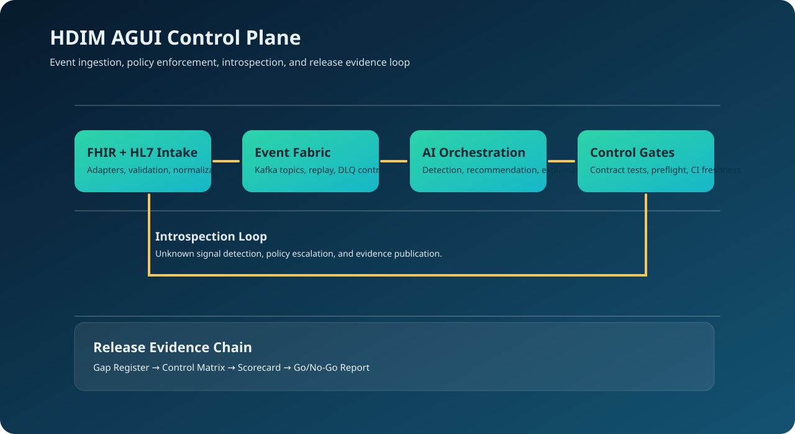

Event-native services
Service boundaries follow event contracts and explicit failure handling with tenant-safe DLQ patterns.
This hub maps event flow, gateway trust, tenant isolation, contract strictness, and release gate behavior to concrete implementation and validation artifacts.
Runtime behavior is constrained by architecture decisions and test gates. Changes are expected to maintain contract compatibility and release evidence freshness.
Service boundaries follow event contracts and explicit failure handling with tenant-safe DLQ patterns.
Preflight, contract tests, security regressions, and upstream CI freshness checks are mandatory before go/no-go.
Every release decision references validator logs, control matrix state, and evidence index entries.
